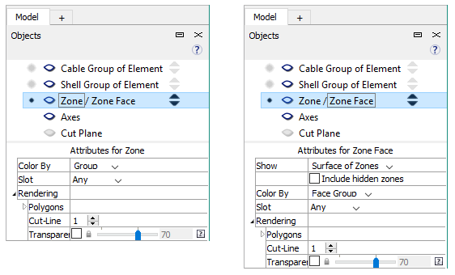

控件组：对象
对象控件组包含相当于绘图项的内容，用于所有可供查看的数据类型。所选的“绘图项”将显示其属性。每个属性都有工具提示加以说明。
当有不止一种类型的数据可用时，列表中会出现多个绘图项。左侧的黑点表示哪个绘图项在选择方面是可交互的。若要允许选择另一个绘图项中的对象，请单击该绘图项名称左侧的灰点。
当网格单元和网格单元面都可用时，一次只能查看这两类对象中的一类。
当存在多种数据类型时，一种数据类型可能被绘制在另一种之上，从而遮挡另一种。您可以单击上/下箭头图标来更改绘图项的绘制顺序。位于列表顶部的项目项先绘制，后续项目项绘制在它们之上。


| 这些内容对您有帮助吗？… 版权与免责声明 | FLAC3D © 2019, Itasca | 原文更新于 2020 年 10 月 8 日 |